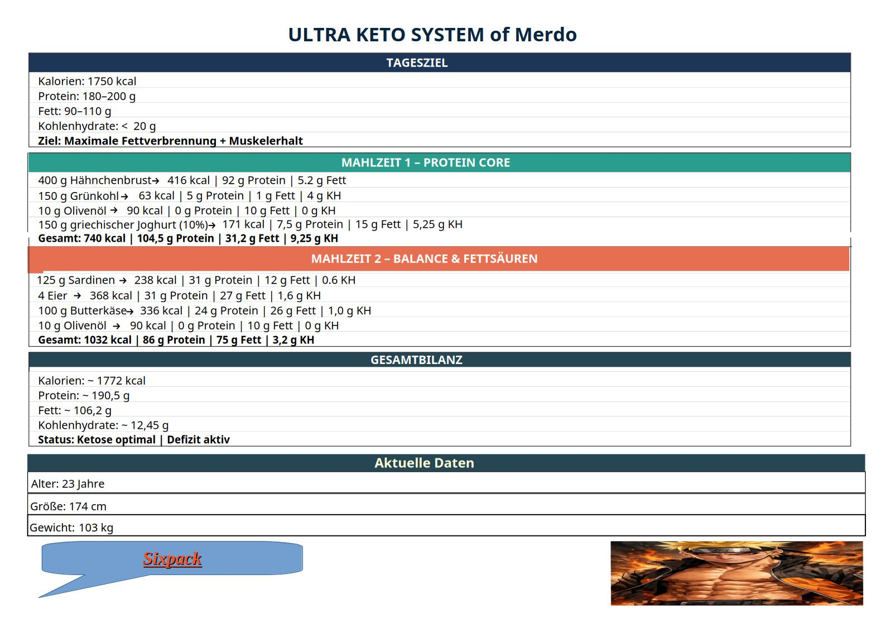
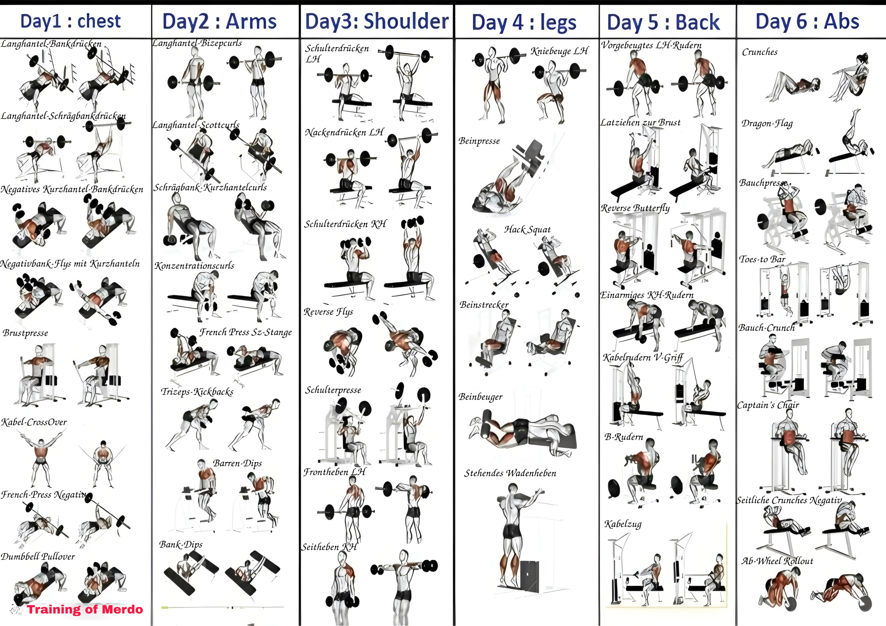

Sixpack Goal
Hey Leute, ich habe mir vorgenommen, einen Waschbrettbauch zu erreichen. Ich werde dabei meinem eigenen Keto-Plan folgen. Ziel ist es, innerhalb von nur 6 Monaten einen Sixpack zu erreichen. Von heute, Montag, den 23.03.2026, werde ich es bis Mittwoch, den 23.09.2026, durchziehen. Ich habe ein Programm mit JavaScript entwickelt, das meinen Fortschritt visuell darstellt. Die Balken zeigen dabei, welche Tage bereits abgeschlossen sind, welcher Tag aktuell läuft und welche noch vor mir liegen. Ihr seid live dabei! Weiter unten seht ihr dann auch meinen Ernährungs- bzw. Trainingsplan mit detaillierten Angaben.
Keto Plan
Hier seht ihr meinen Keto-Plan. Wie man dem Plan entnehmen kann, zeigt er mein tägliches Ziel ganz genau an. Mein Kalorienziel liegt bei 1750 Kalorien, das heißt, ich darf am Tag höchstens 1750 Kalorien zu mir nehmen. Bei den Proteinen liege ich im Bereich von 180 bis 200 Gramm, beim Fett zwischen 90 und 110 Gramm und bei den Kohlenhydraten bestenfalls deutlich unter 20 Gramm. Ich habe meinen Plan in zwei Mahlzeiten aufgeteilt. Die eine Mahlzeit ist eher sehr proteinreich, die andere eher sehr fettreich. Außerdem habe ich alles exakt nach Gramm ausgerechnet, also welche Lebensmittel ich in welcher Menge brauche und auf welche Nährwerte ich damit am Ende komme. Dabei bin ich auf folgende Gesamtwerte gekommen: 1772 Kalorien, 190,5 Gramm Protein, 106,2 Gramm Fett und 12,45 Gramm Kohlenhydrate. Ich bin aktuell 23 Jahre alt, 174 cm groß und wiege 103 Kilo. Diesen Plan werde ich jetzt sechs Monate lang konsequent durchziehen.

Trainingsplan
Wie man dem Trainingsblatt entnehmen kann, ist mein Training auf sechs Trainingstage pro Woche aufgeteilt. Tag 1 ist für die Brust, Tag 2 für die Arme, Tag 3 für die Schultern, Tag 4 für die Beine, Tag 5 für den Rücken und Tag 6 für den Bauchbereich vorgesehen. Die nähere Erklärung zu meinem Trainingssystem und zur weiteren Aufteilung folgt weiter unten.

Plan Explanation
Wie ihr meinem Keto Ernährungs und Trainingsplan oben entnehmen konntet, sieht mein System folgendermaßen aus: Ich esse täglich zwei Mahlzeiten und passe diese gezielt an mein Training an. Meine erste Mahlzeit esse ich etwa zwei bis vier Stunden vor dem Training, damit mein Körper ausreichend Energie und Nährstoffe für die Einheit hat. Meine zweite Mahlzeit nehme ich ungefähr ein bis drei Stunden nach dem Training zu mir, um meinen Körper nach der Belastung optimal zu versorgen und meine Regeneration zu unterstützen. Mein Training beginne ich direkt mit einem klar strukturierten Split Plan, den ich bewusst so aufgebaut habe, dass die Muskelgruppen sinnvoll verteilt sind und ich konstant trainieren kann. Dabei trainiere ich an einem Tag Brust, Schultern und Trizeps, an einem anderen Tag Rücken, Bizeps und Bauch und an einem weiteren Tag Beine zusammen mit dem Bauch. Durch diese Aufteilung kann ich jede wichtige Muskelgruppe gezielt belasten und gleichzeitig dafür sorgen, dass mein Training übersichtlich, effektiv und langfristig durchziehbar bleibt. Zusätzlich ergänze ich meinen Plan durch leichtes Cardio, damit ich Fettverlust, Ausdauer und allgemeine Fitness weiter unterstütze. Insgesamt ist mein gesamtes System so aufgebaut, dass Ernährung, Training und Erholung bestmöglich zusammenpassen und ich mein Ziel konsequent verfolgen kann.
Keto-Sixpack Tracker
Hier könnt ihr live mitverfolgen, wie ich versuche, meinem Ziel Tag für Tag ein Stück näherzukommen. Die grünen Balken zeigen die bereits absolvierten Tage an, während der blaue Balken in Echtzeit den heutigen Tag markiert. Die grauen Balken stehen für die noch bevorstehenden Tage.
Keto Progress